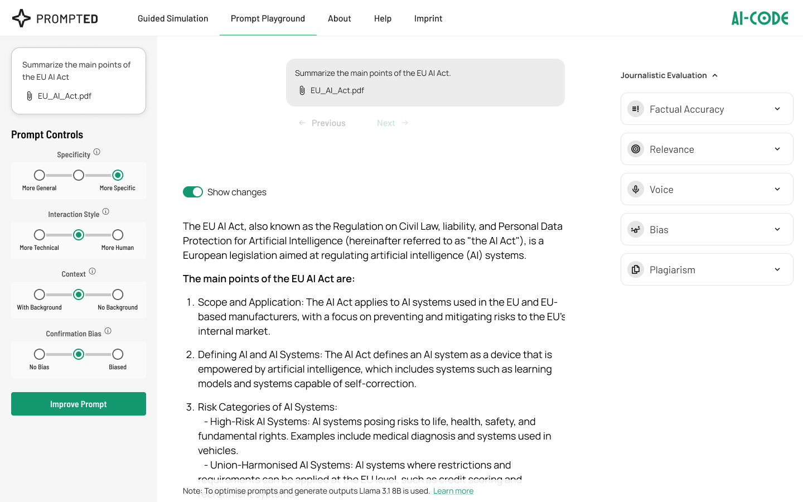
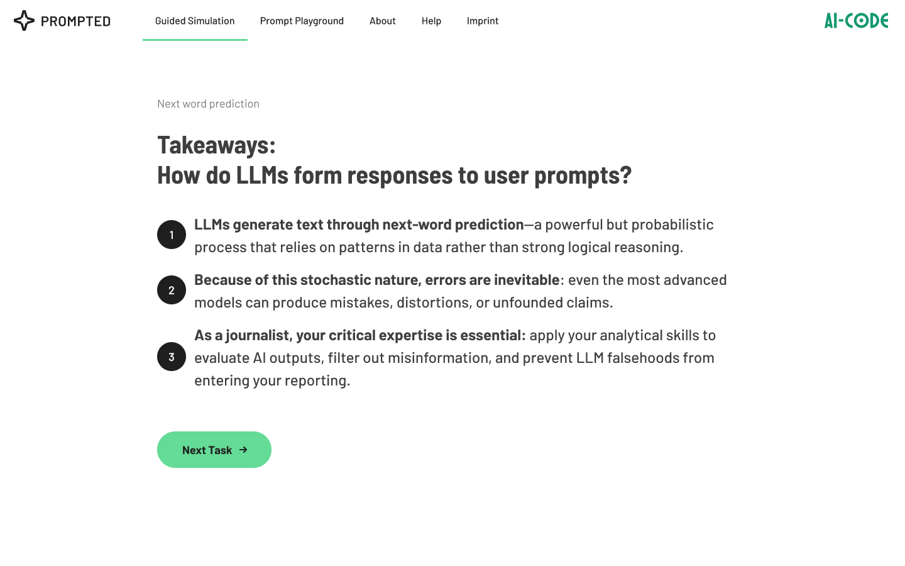

AI-CODE — Responsible AI in Journalism
A hands-on exploration of responsible AI use in journalism — helping journalists understand how large language models function, recognize their limitations, and apply them for more trustworthy content production.
AI-CODE investigates the responsible use of AI in journalism. The project develops competence frameworks, training materials, and practical guidelines that enable journalists and media professionals to harness the potential of large language models while maintaining editorial integrity and public trust.
Problem & Context
The rapid adoption of generative AI in newsrooms raises fundamental questions about quality, trust, and ethics:
- Accuracy Risks: Large language models can produce plausible but factually incorrect content, posing a serious threat to journalistic credibility.
- Lack of Transparency: Audiences are often unaware when AI tools are used in content production, undermining informed media consumption.
- Skills Gap: Many journalists lack the technical understanding to evaluate AI outputs critically or use these tools effectively.
Target Audience & Assumptions
- Primary Group: Professional journalists and editors working in print, broadcast, and digital media.
- Secondary Group: Journalism educators, media organizations, and press agencies seeking to develop AI guidelines.
Key Assumptions: Journalists who understand how AI models work are better equipped to use them responsibly. Practical, scenario-based training is more effective than abstract guidelines alone.
Goals & Success Criteria
- Goal 1: Develop a comprehensive AI competence framework tailored to the journalism profession.
- Goal 2: Create practical training modules that journalists can integrate into their daily workflows.
- Goal 3: Establish best-practice guidelines for transparent and ethical AI use in newsrooms.
- Success Criteria: Adoption by at least 3 partner media organizations and measurable improvement in AI literacy among participants.
Research & Insights
- Trust Paradox: Journalists who experiment with AI tools develop a more nuanced understanding of both their capabilities and limitations.
- Workflow Integration: AI tools are most effective when embedded in existing editorial processes rather than treated as standalone solutions.
- European Perspective: The regulatory landscape in Europe (AI Act) creates unique requirements for AI use in media that differ from other regions.
Hypotheses & Decisions
- Hypothesis: Hands-on experimentation with AI tools, combined with structured reflection, leads to more responsible adoption than policy-only approaches.
- Decision: Develop scenario-based training modules covering fact-checking, content generation, and audience engagement use cases.
- Decision: Create an open competence framework that can be adapted by different media organizations across Europe.
Solution
The AI-CODE project delivers several interconnected outputs:
- AI Competence Framework: A structured model defining the knowledge, skills, and attitudes journalists need for responsible AI use.
- Training Curriculum: Modular workshop formats ranging from half-day introductions to multi-day deep dives covering prompt engineering, fact-checking AI outputs, and ethical considerations.
- Best Practice Guidelines: Practical recommendations for newsroom AI policies, including transparency labeling and quality assurance processes.
- Case Study Collection: Real-world examples of responsible AI integration from partner newsrooms across Europe.


Testing & Validation
The AI-CODE training modules have been piloted with journalists across multiple European countries. Feedback from early workshops helped refine both content and delivery methods, ensuring the materials address real-world challenges faced in contemporary newsrooms.
Journalists trained
European countries
Results & Impact
The project has produced tangible outcomes for the journalism community:
Found training directly applicable to their work
Reported increased confidence in evaluating AI outputs
Partner newsrooms adopted AI guidelines
Expected Impact
- Media Quality: Higher standards for AI-assisted content production, reducing the spread of misinformation.
- Public Trust: Greater transparency in how AI is used in newsrooms, strengthening audience confidence.
- Industry Standards: Contributing to the development of European-wide guidelines for AI in journalism.
Learnings
- Context is Everything: AI tools perform very differently across journalism genres — what works for sports reporting may fail for investigative journalism.
- Human Oversight Remains Essential: Even the most advanced AI tools require editorial judgment and fact-checking at every stage.
- Collaboration Accelerates Adoption: Cross-newsroom knowledge sharing proved more effective than isolated training efforts.